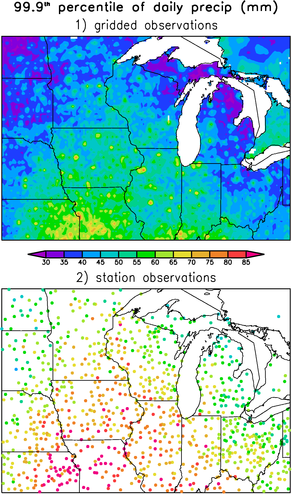
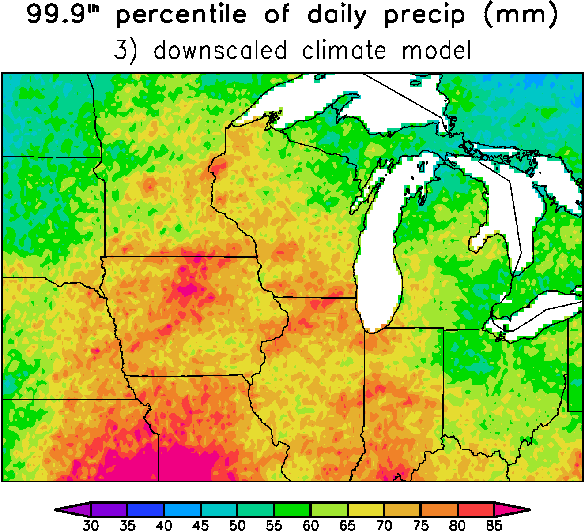

Downscaled Climate Projections
Advantages of a Probabilistic Approach
Preserves Extremes when Interpolating to a Grid
The statistical models for our downscaling are fit to observations at weather stations. After we obtain the Probability Density Functions (PDFs) at the stations, we need to interpolate the results to a regular longitude/latitude grid. Except for simple nearest-neighbor interpolation, which obviously has other problems, interpolation to a grid can be thought of as a weighted average of nearby stations. Since nearby stations are in general not perfectly correlated with each other, the variance of the weighted average is too small compared to the surrounding stations. For example, consider 2 station time series, $s_1(t)$ and $s_2(t)$, with unit variance. Let's suppose a grid point is located halfway between $s_1$ and $s_2$ and therefore a reasonable approximation for $s$ at the grid point is simply the average of $s_1$ and $s_2$. The variance of the average is \begin{equation*} \mathrm{var} \left( \frac{s_1 + s_2}{2} \right) = \frac{1 + r}{2}, \end{equation*} where $r$ is the correlation between $s_1$ and $s_2$. Except when $r = 1$, the variance is reduced compared to both $s_1$ and $s_2$.
This problem has practical implications. For example, Figure 1 shows the 99.9th percentile daily precipitation amount from 40 years of the gridded data set of Maurer et al (2002). The largest precipitation extremes are concentrated at isolated points that are surrounded by relatively large regions of relatively small extremes. It turns out that the large extremes tend to occur at grid points near cities and towns (where there is a station), while between the stations the extremes are relatively weak. The extremes are large close to stations because in this case the "interpolating weights" are nearly zero for all stations except for the one nearest station. Hence the extremes here are most like that of a single station and not a weighted average of stations. The situation is reversed at grid points far from stations, where a large number of individual stations might contribute to the weighted average precipitation.
In Figure 2, we show the extremes calculated from the same 40 years using raw station data. Looking at the raw station data it is clear that even near the stations the extremes in the gridded data tend to be to weak. Note also that the differences between Figure 1 and 2 are especially pronounced in regions with relatively few stations (for example, the Dakotas).
When interpolating observations to a grid as in Maurer et al (2002), the options for avoiding the reduction in extremes are very limited. For obvious reasons, interpolation typically aims to assign some sort of "most likely value" to the grid points based on the surrounding stations. Since the most likely scenario is never the most extreme scenario this means that extremes are under represented. To get around the problem with extremes, you must add random variance to the most likely value in order to preserve the correct variance and extremes. For a dataset that is supposed to represent observations, however, it is obviously problematic to add an extreme event to a particular day when it is very likely that no extremes occurred. Either way, compromises have to be made.
When making random realizations from our downscaled PDFs, however, we are not constrained to follow specific observed events. Instead our only aim is to reproduce the correct climate statistics. By far the easiest way to achieve realistic extremes at all grid points is to interpolate the PDF parameters to the grid and then later draw random numbers from the gridded PDFs. Because the PDFs are determined from the large-scale, they vary slowly in space and therefore there is essentially no reduction in the extremes when using this technique. For example, Figure 3 above shows the 99.9th percentile daily precipitation amount from 40 years of a single realization of a downscaled climate model. Our downscaling correctly reproduces the general magnitude of the extremes in the stations observations shown in Figure 2. Note that this is a single random realization, therefore there is small-scale sampling noise in Figure 3 which represents the natural variability on the small-scales that is also seen in observations (Figure 2). If we instead calculate the 99.9th percentile directly from the PDFs (which is like considering an infinite number of individual realizations) then most of the small-scale features go away.
Home